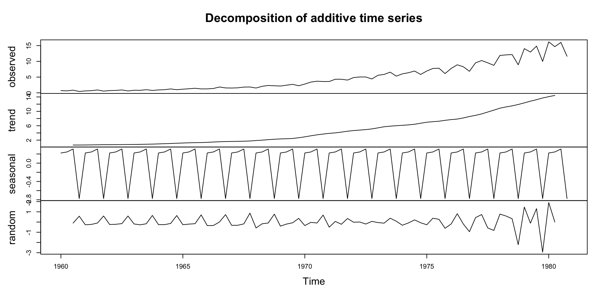
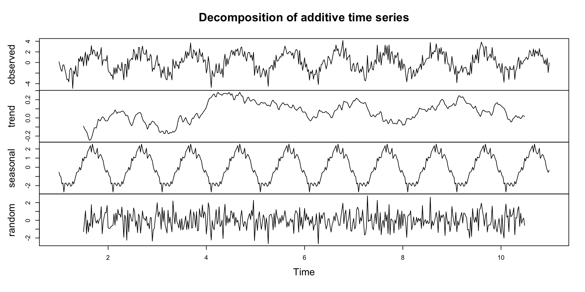
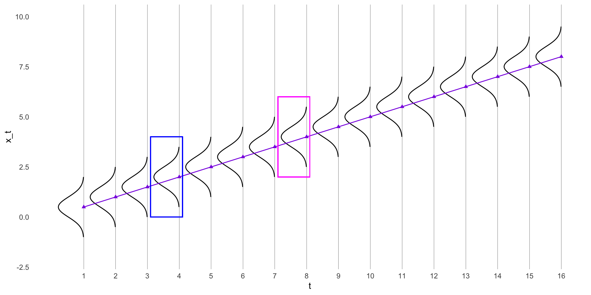
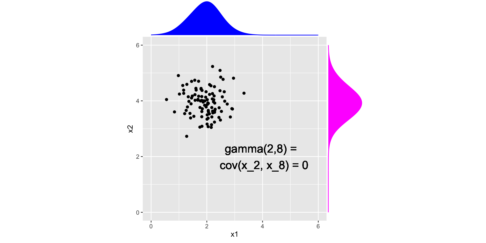
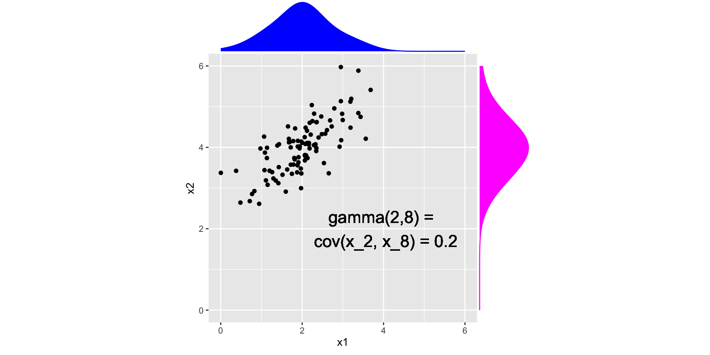
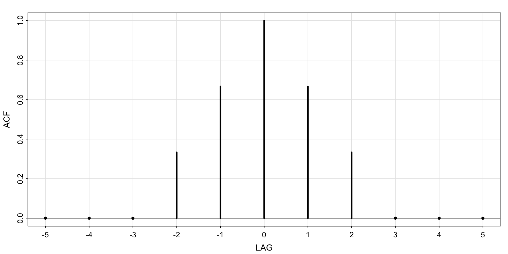
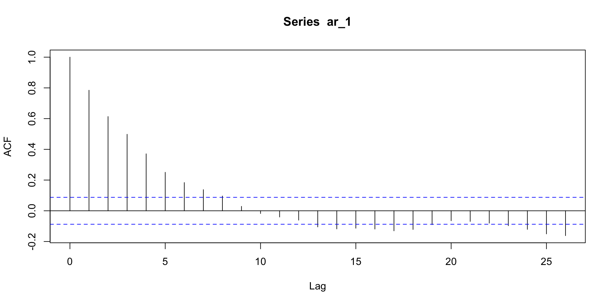
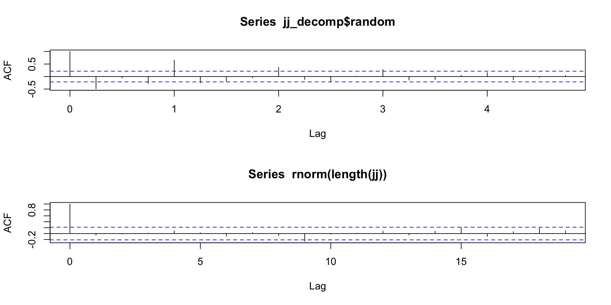

Lecture 3
Recap
\[ \newcommand\E{{\mathbb{E}}} \]
- Visualizing time series
- Research questions involving time series
- Mean and covariance functions
- Moving average examples
- Almost got to stationarity
Today
Decomposing a time series
Stationarity
Autocorrelation function
Time series regression
First “participation” grade
- confirm you are good to opt in or out of the textbook, you have to do it by Oct 2 so do it on Oct 1 (tomorrow).
Lecture Template
- Download “Lecture3Template.qmd” from Canvas
- has some basic document structure set up to make it easier to follow along in lecture :)
Another time series model
Similar to the signal plus noise model,
\[ X_t = T_t + S_t + W_t \]
- \(T_t\) is the trend component
- \(S_t\) is the seasonal component
- \(W_t\) is the error component
The r function stats::decompose will split a time series \(X_t\) into these three components.
Activity 1
Use the
decomposefunction on thejjseries.Match the terms in the equation on the previous slide to each of the components in the chart
Describe the trend.
Does the bottom plot (“error”) look like white noise?
Look at the documentation for the
decomposefunction. Can you determine how the “trend” component was computed?
Activity 1 (solution)
Activity 2
Recall the (sinusoidal) signal plus noise model: \[ w_t \sim \text{iid } N(0, \sigma^2_w)\\ x_t = 2\cos\left (\frac{2\pi t}{50} - .6\right) + w_t \]
- Simulate 500 observations from the signal plus noise model
- Apply the
decomposefunction. Does the error portion look like white noise?
Hint: The below code gives an error. Compare the “frequency” of the jj series. Can you figure out how to use the ts function to specify the correct frequency?
Activity 2 (solution)
Comparing “math perspective” to “data perspective”
Motivating Stationarity
Review: autocovariance function
Error covariance at different time points
Error Covariance at Different Time Points (time dependence)
Stationarity
A time series is stationary if
- the mean function (\(\mu_t\)) is constant and does not depend on time \(t\)
- the autocovariance function (\(\gamma(s,t)\)) depends on \(s\) and \(t\) only though their difference
And nonstationary otherwise.
Steps to determine whether a time series \(x_t\) is stationary:
- Compute the mean function.
- Compute the autocovariance function.
- If both do not depend on \(t\), then \(x_t\) is stationary. If \(\gamma\) depends on \(s\) and \(t\) just through the value \(s-t\), then \(x_t\) is stationary. Otherwise, \(x_t\) is nonstationary.
Activity 3: Example 2.14 Stationarity of a Random Walk
\[ x_t = x_{t-1} + w_t \]
Last, time, we saw that the mean function is \(\E(x_t) = 0\), and the autocovariance function is \(\gamma_x(s, t) = \min\{s,t\}\sigma^2_w\)
- Is \(x_t\) stationary?
- What if there was drift?
Activity 3 Solution (Example 2.14 Stationarity of a Random Walk)
- Is \(x_t\) stationary?
No, the autcovariance function depends on \(t\) (there’s a \(t\) in the equation): \[ \gamma_x(s, t) = \min\{s,t\}\sigma^2_w \]
More concretely: consider if we want to know the correlation between the random walk at times \(s = 2, t = 5\), \[ \gamma(2,5) = \min\{2,5\}\sigma^2_w = 2\sigma^2_w \] But \(\gamma(3,5) = 3\sigma^2_w\). So the autocovariance is different depending on which points in time you are considering.
- What if there was drift?
Again, no. The mean function of the random walk with drift is \(\mu_t = \delta t\), which depends on \(t\).
\(\gamma(s,t)\) for a random walk
Is white noise stationary?
- Mean function of white noise is \(\E(w_t) = 0\)
- Autocovariance function is \[ \gamma_w(s, t) = cov(w_s, w_t) = \begin{cases} \sigma^2_w & \text{ if } s = t\\ 0 & \text{ if } s \ne t \end{cases} \] Since neither depends on \(t\), white noise is stationary.
\(\gamma(s,t)\) for white noise
Break
Activity 4
Which of the following time series are stationary?

Activity 4 (solution)
- (a), (c), (e), (f) (i) are clearly non-stationary in the mean.
- (d), (h) have seasonal patterns
- (i) has increasing variance
- (b) and (g) are stationary
Why is stationarity important?
- In order to measure correlation between contiguous time points
- To avoid spurious correlations in a regression setting
- Simplifies how we can write the autocovariance and autocorrelation functions
Autocorrelation function
The autocorrelation function (acf) of a time series is: \[ \rho(s, t) = \frac{\gamma(s,t)}{\sqrt{\gamma(s,s)\gamma(t,t)}} \] i.e. the autocovariance divided by the standard deviation of the process at each time point.
Autocovariance and Autocorrelation for Stationary Time series
Since for stationary time series the autocovariance depends on \(s\) and \(t\) only through their difference, we can write the covariance as: \[ \gamma(s,t) = \gamma(h) = cov(x_{t+h}, x_t) = \E[(x_{t+h} - \mu)(x_t-\mu)] \] and the correlation as: \[ \rho(s,t) = \rho(h) = \frac{\gamma(h)}{\gamma(0)} \] \(h = s-t\) is called the lag.
Autocorrelation function of a three-point moving average
\(\gamma_v(s, t) = cov(v_s, v_t) = \begin{cases}\frac{3}{9}\sigma^2_w & \text{ if } s = t\\ \frac{2}{9}\sigma^2_w & \text{ if } \vert s-t \vert = 1 \\\frac{1}{9}\sigma^2_w & \text{ if } \vert s-t \vert =2 \\0 & \text{ if } \vert s - t\vert > 2\end{cases}\)
Since \(v\) is stationary, we can write
\(\gamma_v(h) = \begin{cases}\frac{3}{9}\sigma^2_w & \text{ if } h = 0\\ \frac{2}{9}\sigma^2_w & \text{ if } h = \pm1 \\\frac{1}{9}\sigma^2_w & \text{ if }h = \pm 2 \\0 & \text{ if } h> 2\end{cases}\)
And the autocorrelation is:
\(\rho(h) = \begin{cases}1 & \text{ if } h = 0\\ \frac{2}{3} & \text{ if } h = \pm1 \\\frac{1}{3} & \text{ if }h = \pm 2 \\0 & \text{ if } h> 2\end{cases}\)
Autocorrelation function of a three-point moving average
In R, we can plot \(\rho(h)\)
Activity 5
- Predict what the acf will look like for the ar(1) process?
- Simulate an ar(1) process and compute the acf. Were you correct?
- What is the lag 0 autocorrelation? Explain why its value makes sense.
Activity 5 (solution)
Questions on the quiz?
Activity 6 (Problem 2.3)
When smoothing time series data, it is sometimes advantageous to give decreasing amounts of weights to values farther away from the center. Consider the simple two-sided moving average smoother of the form: \[ v_t = \frac{1}{4}(w_{t-1} + 2w_t + w_{t+1}) \] Where \(w_t\) are white noise. The autocovariance as a function of \(h\) is: \[\gamma_v(s, t) = cov(v_s, v_t) = \begin{cases}\frac{6}{16}\sigma^2_w & \text{ if } h = 0\\ \frac{4}{16}\sigma^2_w & \text{ if } h = \pm 1 \\\frac{1}{16}\sigma^2_w & \text{ if } h = \pm 2 \\0 & \text{ if } h> 2\end{cases}\] 1. Compare to the autocovariance equation for the unweighted 3 point moving average from Lecture 2. Comment on the differences.
- Write down the autocorrelation function.
Activity 6 Solution
- 6/16 > 3/9, the “present” is weighted higher in the weighted average which impacts the covariance.
- Divide each term by the variance (\(\gamma(0)\)): \[\rho_v(s, t) = cor(v_s, v_t) = \begin{cases}1 & \text{ if } h = 0\\ \frac{4}{6} & \text{ if } h = \pm 1 \\\frac{1}{6} & \text{ if } h = \pm 2 \\0 & \text{ if } h> 2\end{cases}\]
Activity 7
Recall the decomposition of the Johnson and Johnson quarterly earnings.
- Is the series stationary?
- Does the acf of the random component look like white noise?
Activity 7 Solution
Coming up:
- Assignment 1 due at midnight
- Assignment 2 posted later
- Part of this will be involve “reading” the textbook! (collecting data on how you feel about the math)
- Next Lecture:
- Regression with time
- Cross-correlation
- Inducing stationarity